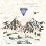

Идея данной разработки
Общий подход к логике дизайна сайтостроения
Исторические параллели
Портфолио работ
Курсы повышения квалификации
Ежедневник
Дизайн онлайн ежедневника разработан на основе привычных ассоциативных связей в соответствии с бумажным вариантом. Человеку на интуитивном уровне поняты вкладки и закладки, которые упрощают процесс компоновки, сокращая объём анализируемой информации и облегчая поиск интересующих задач или событий. К сожалению, из-за ограниченного экранного пространства версия для портативных устройств не способна вместить подобные «изыски».
Электронный ежедневник не столь удобен с точки зрения заполнения информацией (от руки писать проще и быстрее; можно делать наброски схем или рисунков). Но для ведения дел при достаточном разрешении экрана, наличии фильтров, системы компоновки актуальных задач и напоминаний оказывается привлекательнее. Особенно учитывая наличие мобильной версии, которая всегда под рукой. И хоть полноценное использование портативных устройств не так удобно из-за малой наглядности и отсутствия полноценной клавиатуры, но отлично подходит для просмотра и управления существующими задачами, а также для добавления вновь поступивших с целью дальнейшего планирования на стационарном компьютере или ноутбуке.
Предлагаемый вариант исполнения Ежедневника отличается от существующих на рынке простотой в использовании, наглядным и понятным дизайном, удобной системой фильтров и наличием области финансового планирования. Разрабатывался данный ресурс для собственного использования, поэтому качество и поддержка проекта гарантированы.
P.S. В настоящий момент сайт находится в стадии разработки и является дипломным проектом факультета Веб-разработки GeekBrains (см. раздел «Прочее», вкладка «Обучение»).
Мира Вид
Данный проект — творческий полёт фантазии; двигатель процесса развития в направлении интернет-индустрии. Главная цель — создать ресурс с раскрытием серьёзной темы, но не самой интересной для большинства пользователей. Решить задачу можно, создав привлекательную картинку, наполнив содержимое динамикой и интерактивностью, чтобы читатель краем глаза взглянул в сторону смыслов.
Да и в целом, если каждый человек на земле безвозмездно потратит горстку личного времени на дело во имя блага на земле, мир изменится до неузнаваемости.
P.S. В настоящий момент сайт находится в стадии доработки дизайна и полной реконструкции технической части. Представленная версия — дипломный проект по программе «Разработка интерфейсов и веб-дизайн» в РГУ им. А.Н.Косыгина (см. раздел «Прочее», вкладка «Обучение»).
Прочее
Работы
-

Андрей Семёнов
Разработка дизайна и вёрстка персонального сайта-визитки.
-
GeekBrains
Вёрстка сайта по готовому макету по курсу "Профессиональная вёрстка".
-
GeekBrains
Вёрстка сайта по готовому макету по курсу "HTML и CSS".
-
GeekBrains
Выполнение практических заданий по курсу "Основы программирования".
-
РГУ им. А.Н. Косыгина
Разработка дизайна и вёрстка сайта для выполнения выпускного проекта по программе "Разработка интерфейсов и веб-дизайн".
Образование
РГУ им. А.Н. Косыгина
(Технологии. Дизайн. Искусство.)
Разработка интерфейсов и веб-дизайн
- Программа обучения:
- Основы информационных технологий в дизайне
- Технология сетевого дизайна и её программное обеспечение
- История культуры и искусств
- Рисунок
- Живопись
- Проектирование в веб-дизайне
- Основы композиции
- Тестирование сайта и программного обеспечения
- Языковые средства создания гипертекстовых документов
- Инструментальные средства визуальной коммуникации и прикладной дизайн
- Выпускная работа
GeekBrains
Факультет веб-разработки
- Программа обучения:
- HTML и CSS
- Профессиональная вёрстка
- JavaScript
- Продвинутый курс по JavaScript
- ReactJS
- Linux. Рабочая станция
- Основы баз данных
- Базовый курс PHP
- Профессиональная веб-разработка на PHP
- Базы данных
- Алгоритмы, архитектура и паттерны на PHP
- Фреймворк Laravel. Глубокое погружение
- Методологии разработки Agile/Scrum
- Выпускной проект